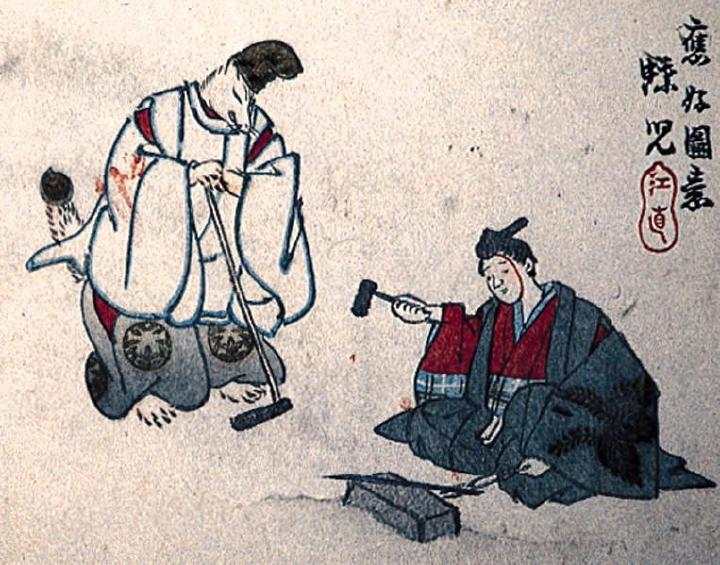

← 图鉴索引

烏帽子に直垂装束の獣。狐のようである。人間の男と共に刀を打っている。
著作者：蝶児／出典：親書誌：M80_naprstek_0003：（小鍛冶；コカジ）／日付：2011／資源識別子：M80_naprstek_0003_0001_0000
Copyright (c)2010- International Research Center for Japanese Studies, Kyoto, Japan. All rights reserved.